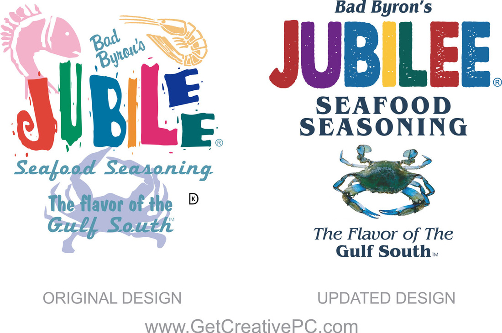
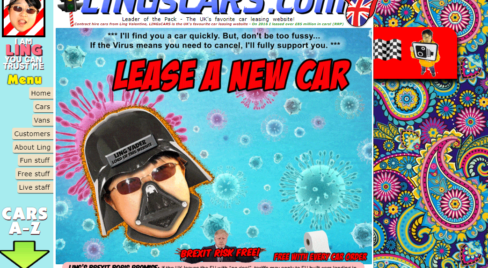
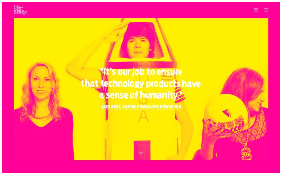
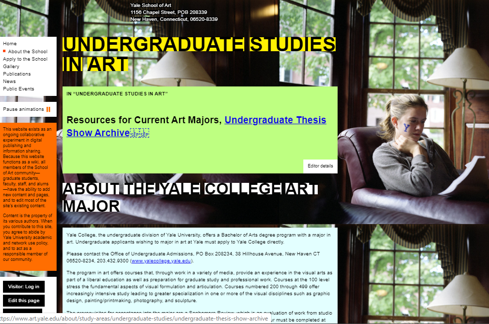

Review van design 1: Jubilee Sea food
Verbeteringen:
- meer consistency in de lettergrootte, hierdoor is de tekst leesbaar geworden
- de tekst is beter leesbaar omdat er geen images achter geplaatst zijn
- er is meer witruimte gebruikt
- de kleuren zijn beter op elkaar afgestemd
- de belangrijkste tekst is groter qua lettertype
- er is een leesbaar lettertype gebruikt dat zakelijker is

Review van design 2: Ling's Cars
Opmerkingen:
- de pagina bevat heel veel kleuren en komt druk over
- de menu buttons aan de linkerzijde zijn niet consistent in grootte
- I am Ling you can trust me, deze tekst zit te dicht op elkaar
- sommige letters zijn heel klein weergegeven en daardoor niet goed leesbaar
- het bewegende plaatje van ling vader (eigenlijk alle bewegende plaatjes) leidt af van de rest en daardoor lees je de teksten niet
- het doel vand de website ontgaat je totaal
- je kunt niet op de pijl klikken die doet het niet, dus de interface is niet userfriendly
- de teksten van de auto's zijn fel blauw en leest daardoor niet fijn

Design 3: NewDeal Design Agency
Commentaar op het design van de webpagina:
- de gekozen kleuren roze en geel geven te weinig contrast en passen niet bij elkaar
- het logo linksboven is veel te klein qua formaat en hierdoor valt het totaal weg
- de witte tekst is niet goed leesbaar, te dicht op elkaar qua regelafstand
- het menu icoontje rechtsboven is veel te klein en valt niet op
- idem voor het envelopje om contact op te nemen
- het totale plaatje is niet attractief om naar te kijken, het doet pijn aan de ogen

Design 4: Yale School of Art
Commentaar op het design van de webpagina:
- De headings zijn onleesbaar omdat alleen de achtergrond van de letters een kleur heeft en niet als gehele blok
- Er worden verschillende kleuren gebruikt voor de aparte secties, dit is erg onrustig
- De contactgegevens staan midden bovenaan (en de footer onderaan), heeft niet dezelfde uitlijning als de rest van de teksten, dit ziet er rommelig uit
- Je weet als lezer niet waar je het eerst moet kijken
- De buttons zijn niet consistent qua kleur en hierdoor weet je niet dat je met buttons te maken hebt
- De achtergrond foto wordt herhaald en neemt niet het gehele scherm in beslag
- de zwarte buttons aan de linkerkant zijn niet allemaal even groot
- het gebruikte lettertype van de paragrafen is te klein en de tekst is te breed, dat kan beter smaller
- de tekstbreedte is niet responsive en past zich niet aan, aan de grootte van het scherm
- de breedte van de paragrafen zijn afwijkend
- de paragrafen zijn afzonderlijke blokken en niet consistent qua kleur en grootte
- de afzonderlijke pagina's van de website zijn niet consistent waardoor je niet weet dat je op dezelfde website zit. (ja, het is wel consistent qua lelijkheid)
- op deze website weet je niet wat het belangrijkste is om te lezen, er is geen hierarchie